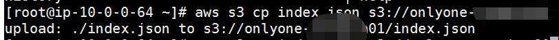
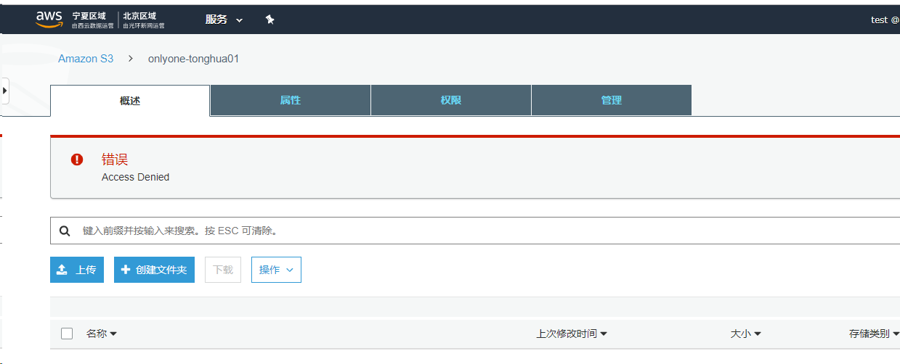

S3 Bucket 如何配置才能做到只允许某一个IAM User操作？
Nov 21, 2019
0x00 前言
有这么个需求，我有一个S3 Bucket，然后我只想让某一个User管理，我应该咋操作。
简而言之，可以通过Bucket Policy实现，限制某一个IAM User才能访问，然后其他的操作全都deny掉。
0x01 Policy
1 | { |
你要是用这个Policy的话，需要修改bucketname、username，别的没啥了。
Policy比较简单，大意就是有一个条件aws:username不等于我的username的，我就全都给deny掉。
这个是允许的user执行结果

这个是其他无权限的user

0x02 总结
可以在根据指定的action做一些精细化的访问控制，不过那就不在这个的讨论范围了。
0x03 参考链接
没参考啥，去Policy的控制台测测就完了。